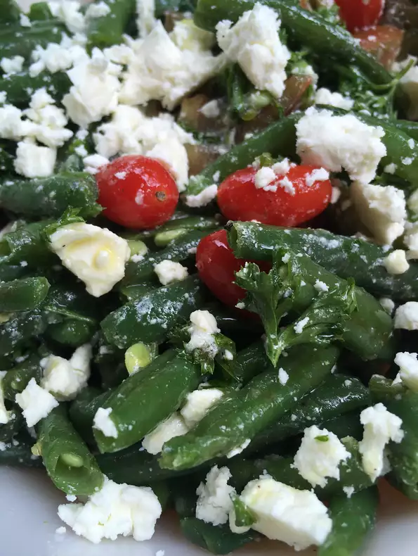

Greek Green Bean Salad with Feta and Tomatoes

Description
This cold green bean salad is made with feta cheese and tomatoes and is
one of my favorite salads for a picnic or a barbecue. I make this amount
for 2 or 3 people, but you can easily double or quadruple the recipe.
Ingredients
- 1 pound fresh green beans, trimmed
- 3 tomatoes, chopped
- ¼ cup olive oil
- 2 tablespoons white balsamic vinegar
- salt and freshly ground black pepper to taste
- 1 shallot, minced
- ¼ cup chopped fresh parsley
- 1 clove garlic, minced
- 2 ounces crumbled feta cheese
Steps
-
Bring a pot of lightly salted water to a boil and cook beans until they
are soft, 10 to 15 minutes. Drain well. Combine green beans and tomatoes
in a large bowl
-
Stir together olive oil, white balsamic vinegar, salt, and pepper in a
small bowl. Add shallot, parsley, and garlic. Pour dressing over beans
and tomatoes and mix. Mix in crumbled feta cheese. Allow to sit for 20
minutes before serving.